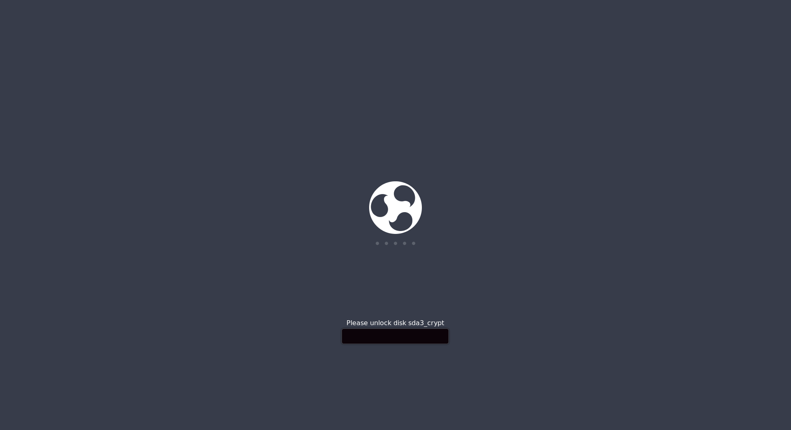
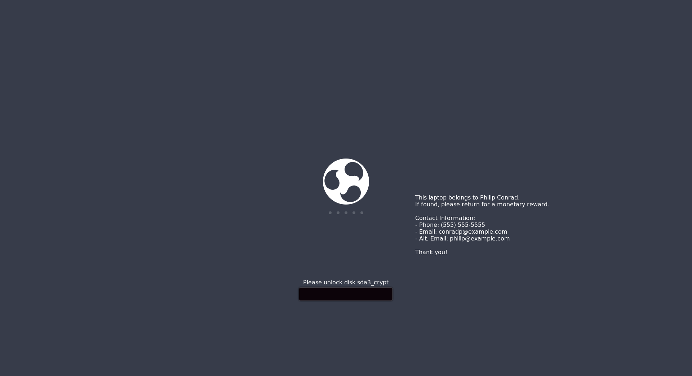

Boot Splash Screen Hacking with Plymouth
What is Plymouth?
Plymouth is the software behind the Ubuntu boot splash screen. It handles animating the loading dots, slapping the logo in the middle of the screen, and even the password dialog (if you have disk encryption set up). It also has a scripting langugage, which can be used to draw nearly arbitrary images to the boot splash screen, including PNG-format images, and text.
How Plymouth does stuff
Plymouth is basically a scripting environment for bootup splash screens. It's primitive, but effective for this purpose.
Images and Sprites
Plymouth does everything with images. This might be a bit surprising if you come from a background using other drawing APIs, like the HTML5 Canvas (which can draw basic shapes easily), or the 2D Cairo library's API.
To draw text, that text is first drawn into an image object, and then displayed later.
Example:
warning_image = Image.Text ("Some warning text for telling the user something.");To display an Image, you need Sprites. Sprites are like little billboards that an image is painted on or stretched across. They can be moved around, and have adjustable opacity.
Example:
warning_sprite = Sprite ();
warning_sprite.SetImage (warning_image);
warning_sprite.SetPosition(100, 100, 5); # place at X=100, Y=100, Z=5
warning_sprite.SetOpacity (0.8); # 80% opacity.To do anything useful though, you need to put that Sprite-wrangling code inside a display callback.
Callbacks
Plymouth defines several callbacks.
Plymouth.SetBootProgressFunctionPlymouth.SetRootMountedFunctionPlymouth.SetKeyboardInputFunctionPlymouth.SetUpdateStatusFunctionPlymouth.SetDisplayPasswordFunctionPlymouth.SetDisplayQuestionFunctionPlymouth.SetDisplayNormalFunctionPlymouth.SetMessageFunction
These allow hooking user-defined functions into different parts of the splash screen display process.
To display a chunk of text all the time, I found that adding code to the Plymouth.SetDisplayNormalFunction callback works nicely.
Debugging the theme
When I went to tweak the Ubuntu boot up splash screen, I encountered a wonderful AskUbuntu StackExchange question about that exact topic. The top-rated answer there was excellent.
Testing out a Plymouth theme without rebooting
To run the following chain of commands, you'll need the plymouth-x11 package installed.
It fires up a Plymouth instance (which will overwrite most of your screen) to show the default Plymouth theme, displaying the basic splash screen for 10 seconds, and then kills the Plymouth instance.
sudo plymouthd --debug --debug-file=/tmp/plymouth-debug-out ; sudo plymouth --show-splash ; for ((I=0;I<10;I++)); do sleep 1 ; sudo plymouth --update=event$I ; done ; sudo plymouth --quitUpdate the boot splash screen (IMPORTANT)
You can make edits to a Plymouth theme script all day, but Ubuntu won't pick up those edits unless you update the initramfs it uses when it's booting.
This is done by running:
sudo update-initramfs -uWhy was I messing around with Plymouth anyway?
I lost a laptop once. On it was several days-worth of uncommitted work files, along with a couple chapters of an unfinished sci-fi novella, and a few dozen MB of student code assignments still ungraded.
The nice folks that found it returned it to me unscathed, after I proved I was the "Philip Conrad" shown on the login screen.
After that event, I vowed to never use a machine for work without full-disk encryption. Full-disk encryption ensures that as long as the machine is powered off, the data on-disk is protected. For the threat models I think are realistic for me to defend against, this is a good security measure.
However, it has one problem:

Ubuntu Budgie Full-Disk Encryption Splash Screen
Notice the lack of a username, display name, or normal customizeable desktop background? Without those things, how is a developer supposed to show normal people that they own their PC?
The Contact Information Hack
I customized the default Plymouth splash theme under /usr/share/plymouth/themes on my system. The edits were minimal:
+fun DisplayContactInfo(text) {
+ contactsprite.SetImage(ImageToText (text));
+ contactsprite.SetPosition((Window.GetWidth (0) * 0.6), (Window.GetHeight (0) / 2), 1);
+}
+
...
fun display_normal_callback ()
{
...
+
+ DisplayContactInfo("This laptop belongs to Philip Conrad.\nIf found, please return for a monetary reward.\n\nContact Information:\n- Phone: (555) 555-5555\n- Email: conradp@example.com\n- Alt. Email: philip@example.com\n\nThank you!");
...
}
Plymouth.SetDisplayNormalFunction (display_normal_callback);I added a function named DisplayContactInfo, based on related functions defined near the top of the script file. This function handles rendering text onto a Sprite that's offset slightly to the right of the center of the screen.
Then, down in the display_normal_callback function, I call the DisplayContactInfo function to draw a looooooooooong multi-line block of text. In the example above, I've censored out my contact information with a dummy phone number and emails.
Running live, here's what the dummy contact information looks like:

Ubuntu Budgie Full-Disk Encryption Splash Screen, with Contact Information
Since I use Ubuntu pretty heavily on my work machines, I'll probably be keeping this hack around for a while.